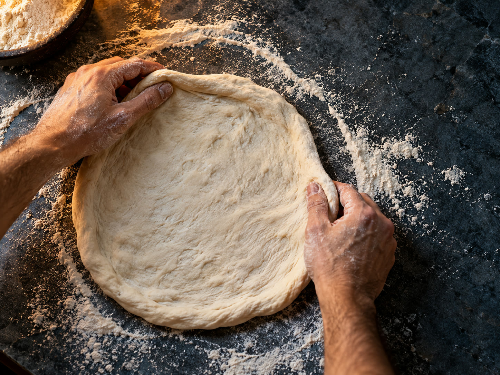
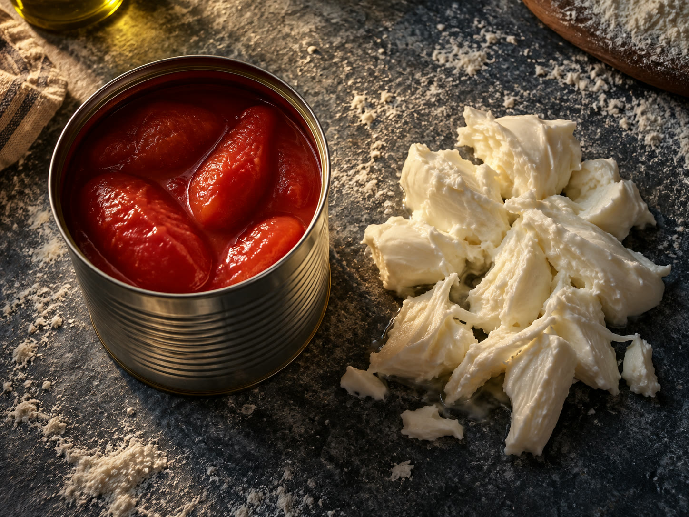
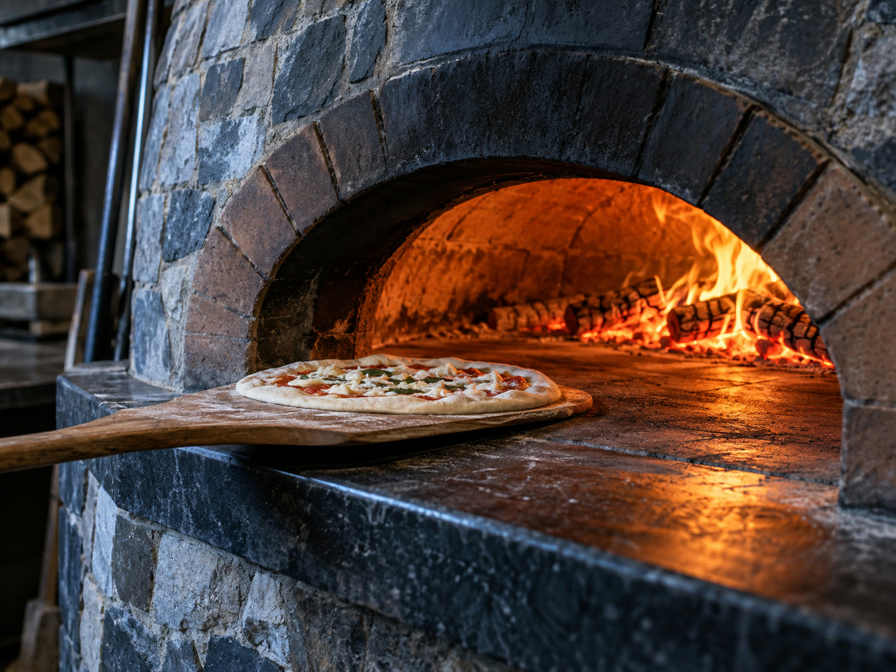
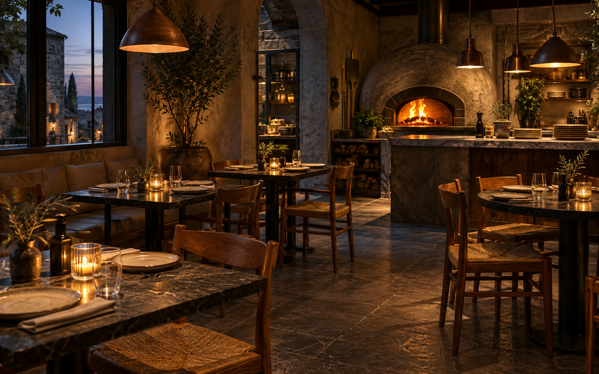

One
The base
Stretched by hand on floured stone. No roller ever touches it, because a roller pushes out the air the proof spent all that time putting in.
From a classic Margherita to steak, figs and garden ingredients.
Choose your favourite, then order from the menu on Uber Eats or Mr D.
Bases stretched by hand. San Marzano tomato. Fior di latte torn, never grated.
Long enough to blister the crust. Short enough that the middle stays soft.
Dine in, takeaway, or delivered to your door.
There is no clever trick in here. It is the same three steps every night, done the slow way.

Stretched by hand on floured stone. No roller ever touches it, because a roller pushes out the air the proof spent all that time putting in.

San Marzano tomato, crushed by hand and used raw. Cheese is fior di latte, torn rather than grated, so it melts in pieces instead of a sheet.

Wood, burning low and steady all service. The base goes in near the flame and comes out in about ninety seconds, blistered and still soft in the middle.
This is the whole cook. Press and hold, and let go too early to see why nobody rushes it.
Press and hold the disc
Walk in, or call ahead and take it home. Both work. The pizza is the same either way.
